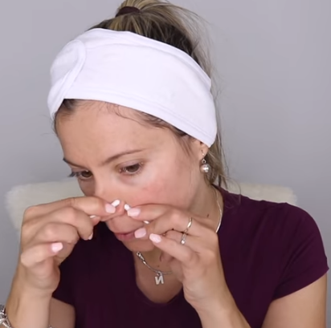

PIEL PERFECTA
Entra
Entra
Aplicar mascarillas 2 o maxima 3 veces a la semana ayuda a tener una mejor apariencia
(Recuerda que existen
mascarrillas para piel grasa y seca en nuestros apartados podras saber cual es cual).
Una vez por semana es recomendable realizar una limpieza facialpara eliminar impurezas.!!!Mira como puedes hacerla!!!
Pon una toalla humeda tibia
Con tu exfoliante masajea en circulos por 2min

Complementa a la exofoliacion,eliminando impureza
En la olla coloca agua caliente, agrandara poros
Extrae puntos negros y espinillas

Aplica mascarilla hidratante y despues tonificante
Tambien te recomendamos algunas de nuestras siguientes mascarillas
Son para eliminar manchas y de antioxidacion;)
OTRAS...
Entra
Entra